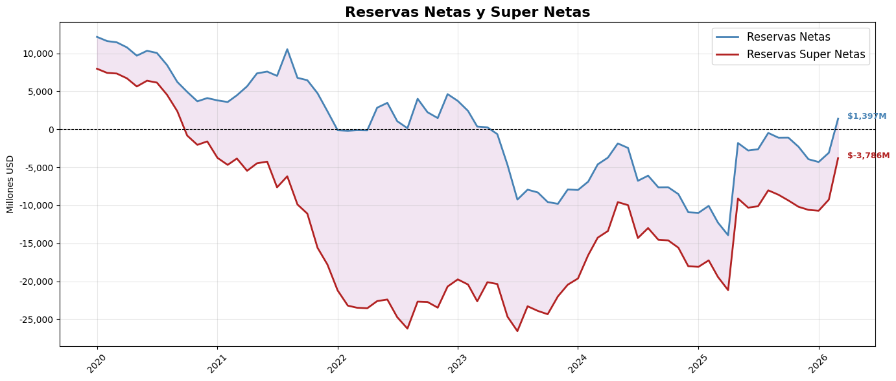

import pandas as pd
import numpy as np
import yfinance as yf
import matplotlib.pyplot as plt
import seaborn as sns
#Vamos cargar la data al codigo, tenemos gran parte en este excel.
archivo = "C:/Users/Admin/Documents/GitHub/VJaroszewski-econ/codigos/Codigos_resNet/datos/deuda multilaterales.xlsx"
deuda_multi = pd.read_excel(archivo, sheet_name="deuMult")
encajes = pd.read_excel(archivo, sheet_name="dep y encajes")
bop_1 = pd.read_excel(archivo, sheet_name="bopreal_1")
bop_2 = pd.read_excel(archivo, sheet_name="bopreal_2")
bop_3 = pd.read_excel(archivo, sheet_name="bopreal_3")
bop_4 = pd.read_excel(archivo, sheet_name="bopreal_4")bop_2['fecha'] = pd.to_datetime(bop_2['fecha'])
bop_2['fecha'] = bop_2['fecha'].dt.to_period('M')
bop_1['fecha'] = pd.to_datetime(bop_1['fecha'])
bop_1['fecha'] = bop_1['fecha'].dt.to_period('M')
bop_3['fecha'] = pd.to_datetime(bop_3['fecha'])
bop_3['fecha'] = bop_3['fecha'].dt.to_period('M')
bop_4['fecha'] = pd.to_datetime(bop_4['fecha'])
bop_4['fecha'] = bop_4['fecha'].dt.to_period('M')bop = (
bop_1
.merge(bop_2, on='fecha', how='outer')
.merge(bop_3, on='fecha', how='outer')
.merge(bop_4, on='fecha', how='outer')
)import pandas as pd
# Asegurar que fecha sea Period mensual
bop['fecha'] = pd.PeriodIndex(bop['fecha'], freq='M')
# Poner fecha como índice
bop = bop.set_index('fecha')
# Crear rango completo mensual
rango_completo = pd.period_range(
start=bop.index.min(),
end=bop.index.max(),
freq='M'
)
# Reindexar (esto agrega los meses faltantes con NaN)
bop = bop.reindex(rango_completo)
# Opcional: volver a tener fecha como columna
bop = bop.reset_index().rename(columns={'index': 'fecha'})
bop| fecha | bopreal_1 | FFj_x | FFj_y | FFj | |
|---|---|---|---|---|---|
| 0 | 2024-01 | 0.0 | NaN | 0.0 | NaN |
| 1 | 2024-02 | NaN | 0.000000 | NaN | NaN |
| 2 | 2024-03 | NaN | NaN | NaN | NaN |
| 3 | 2024-04 | NaN | NaN | NaN | NaN |
| 4 | 2024-05 | NaN | NaN | NaN | NaN |
| 5 | 2024-06 | NaN | NaN | NaN | NaN |
| 6 | 2024-07 | NaN | 166.666667 | NaN | NaN |
| 7 | 2024-08 | NaN | 166.666667 | 150.0 | NaN |
| 8 | 2024-09 | NaN | 166.666667 | NaN | NaN |
| 9 | 2024-10 | 250.0 | 166.666667 | NaN | NaN |
| 10 | 2024-11 | NaN | 166.666667 | 150.0 | NaN |
| 11 | 2024-12 | NaN | 166.666667 | NaN | NaN |
| 12 | 2025-01 | NaN | 166.666667 | NaN | NaN |
| 13 | 2025-02 | NaN | 166.666667 | 150.0 | NaN |
| 14 | 2025-03 | 250.0 | 166.666667 | NaN | NaN |
| 15 | 2025-04 | NaN | 166.666667 | NaN | NaN |
| 16 | 2025-05 | NaN | 166.666667 | 150.0 | NaN |
| 17 | 2025-06 | NaN | 166.666667 | NaN | 13.5 |
| 18 | 2025-07 | NaN | NaN | NaN | NaN |
| 19 | 2025-08 | NaN | NaN | 150.0 | NaN |
| 20 | 2025-09 | 250.0 | NaN | NaN | NaN |
| 21 | 2025-10 | NaN | NaN | NaN | 13.5 |
| 22 | 2025-11 | NaN | NaN | 1150.0 | NaN |
| 23 | 2025-12 | NaN | NaN | NaN | NaN |
| 24 | 2026-01 | NaN | NaN | NaN | NaN |
| 25 | 2026-02 | NaN | NaN | 1100.0 | NaN |
| 26 | 2026-03 | 250.0 | NaN | NaN | NaN |
| 27 | 2026-04 | NaN | NaN | NaN | 13.5 |
| 28 | 2026-05 | NaN | NaN | 1050.0 | NaN |
| 29 | 2026-06 | NaN | NaN | NaN | NaN |
| 30 | 2026-07 | NaN | NaN | NaN | NaN |
| 31 | 2026-08 | NaN | NaN | NaN | NaN |
| 32 | 2026-09 | 250.0 | NaN | NaN | NaN |
| 33 | 2026-10 | NaN | NaN | NaN | 13.5 |
| 34 | 2026-11 | NaN | NaN | NaN | NaN |
| 35 | 2026-12 | NaN | NaN | NaN | NaN |
| 36 | 2027-01 | NaN | NaN | NaN | NaN |
| 37 | 2027-02 | NaN | NaN | NaN | NaN |
| 38 | 2027-03 | 250.0 | NaN | NaN | NaN |
| 39 | 2027-04 | 2750.0 | NaN | NaN | 13.5 |
| 40 | 2027-05 | NaN | NaN | NaN | NaN |
| 41 | 2027-06 | NaN | NaN | NaN | NaN |
| 42 | 2027-07 | NaN | NaN | NaN | NaN |
| 43 | 2027-08 | NaN | NaN | NaN | NaN |
| 44 | 2027-09 | 125.0 | NaN | NaN | NaN |
| 45 | 2027-10 | 2625.0 | NaN | NaN | 13.5 |
| 46 | 2027-11 | NaN | NaN | NaN | NaN |
| 47 | 2027-12 | NaN | NaN | NaN | NaN |
| 48 | 2028-01 | NaN | NaN | NaN | NaN |
| 49 | 2028-02 | NaN | NaN | NaN | NaN |
| 50 | 2028-03 | NaN | NaN | NaN | NaN |
| 51 | 2028-04 | NaN | NaN | NaN | 13.5 |
| 52 | 2028-05 | NaN | NaN | NaN | NaN |
| 53 | 2028-06 | NaN | NaN | NaN | NaN |
| 54 | 2028-07 | NaN | NaN | NaN | NaN |
| 55 | 2028-08 | NaN | NaN | NaN | NaN |
| 56 | 2028-09 | NaN | NaN | NaN | NaN |
| 57 | 2028-10 | NaN | NaN | NaN | 913.5 |
bop = bop.set_index('fecha')
bop['Bopreal'] = bop.sum(axis=1)
bop['bop_año'] = (
bop['Bopreal'][::-1]
.rolling(12)
.sum()[::-1]
)deuda_multi.index=deuda_multi['fecha']
deuda_multi['suma un año']= (
deuda_multi["vencimiento"][::-1]
.rolling("365D")
.sum()[::-1]
)/1000deuda_multi = deuda_multi.drop(columns=['fecha','vencimiento'])
deuda_multi=deuda_multi.rename(columns={'suma un año':'deuda_mult'})encajes.index=encajes['fecha']
encajes=encajes.drop(columns=['fecha'])
encajes['dep_Nac_ext']=encajes['dep_Nac_ext']/1000
encajes['encajes_ext']=encajes['encajes_ext']/1000tc_yuan_excel= "C:/Users/Admin/Documents/GitHub/VJaroszewski-econ/codigos/Codigos_resNet/datos/tc_yuan.xlsx" \
tc_yuan = pd.read_excel(tc_yuan_excel)
# Normalizar fechas a inicio de mes para hacer el merge
tc_yuan['Fecha'] = pd.to_datetime(tc_yuan['Fecha'], format='%d.%m.%Y')
tc_yuan['fecha'] = tc_yuan['Fecha'].dt.to_period('M').dt.to_timestamp()
tc_yuan['Último']=tc_yuan['Último']/10000
# Tomar el último valor disponible por mes
tc_yuan_mensual = tc_yuan.sort_values('Fecha').groupby('fecha')['Último'].last().reset_index()
swap_china = pd.DataFrame({
'fecha': pd.date_range(start='2020-01-01', periods=75, freq='MS'),
'yuanes': 130_000_000
})
# Merge con swap_china
swap_china = swap_china.merge(tc_yuan_mensual, on='fecha', how='left')
# Calcular monto en usd
swap_china['swap_usd'] = swap_china['yuanes'] / swap_china['Último']
swap_china['swap_usd']=swap_china['swap_usd']/1000
swap_china = swap_china.set_index('fecha')
swap_chinadf=deuda_multi.merge(encajes['dep_Nac_ext'], left_index=True, right_index=True, how="left")
df_c=df.merge(encajes['otros pasivos_usd'], left_index=True, right_index=True, how="left")reservas_excel = "C:/Users/Admin/Documents/GitHub/VJaroszewski-econ/codigos/Codigos_resNet/datos/reservas.xlsx"
reservas = pd.read_excel(reservas_excel)
reservas['fecha'] = pd.to_datetime(reservas['Fecha'])
reservas = reservas.set_index('fecha')
reservas| Fecha | Reservas mensuales | |
|---|---|---|
| fecha | ||
| 2020-01-01 | 2020-01-01 | 44917.1 |
| 2020-02-01 | 2020-02-01 | 44790.7 |
| 2020-03-01 | 2020-03-01 | 43561.2 |
| 2020-04-01 | 2020-04-01 | 43568.4 |
| 2020-05-01 | 2020-05-01 | 42588.5 |
| ... | ... | ... |
| 2026-08-01 | 2026-08-01 | NaN |
| 2026-09-01 | 2026-09-01 | NaN |
| 2026-10-01 | 2026-10-01 | NaN |
| 2026-11-01 | 2026-11-01 | NaN |
| 2026-12-01 | 2026-12-01 | NaN |
84 rows × 2 columns
df=deuda_multi.merge(encajes['dep_Nac_ext'], left_index=True, right_index=True, how="left")
df_c=df.merge(encajes['otros pasivos_usd'], left_index=True, right_index=True, how="left")
df_b=df_c.merge(reservas['Reservas mensuales'], left_index=True, right_index=True, how="left")
df_a=df_b.merge(swap_china['swap_usd'], left_index=True, right_index=True, how="left")df_1=df_a.merge(encajes['encajes_ext'], left_index=True, right_index=True, how="left")
fecha_max = reservas['Reservas mensuales'].last_valid_index()
df_1 = df_1.loc['2020-01-01':fecha_max]
df_1.index = pd.to_datetime(df_1.index)
df_1.index = df_1.index.to_period('M')
df_1=df_1.merge(bop['bop_año'], left_index=True, right_index=True, how="left")
df_1['otros pasivos_usd']=df_1['otros pasivos_usd']-df_1['swap_usd']
df_1=df_1[['Reservas mensuales', 'encajes_ext', 'swap_usd','bop_año','dep_Nac_ext','otros pasivos_usd','deuda_mult']]
df_1=df_1.fillna(0)
df_1['Res_net']=df_1['Reservas mensuales']-df_1['encajes_ext']-df_1['swap_usd']-df_1['bop_año']-df_1['dep_Nac_ext']-df_1['otros pasivos_usd']
df_1['Res_Super_net']=df_1['Reservas mensuales']-df_1['encajes_ext']-df_1['swap_usd']-df_1['bop_año']-df_1['dep_Nac_ext']-df_1['otros pasivos_usd']-df_1['deuda_mult']df_1| Reservas mensuales | encajes_ext | swap_usd | bop_año | dep_Nac_ext | otros pasivos_usd | deuda_mult | Res_net | Res_Super_net | |
|---|---|---|---|---|---|---|---|---|---|
| fecha | |||||||||
| 2020-01 | 44917.100000 | 9958.753033 | 18740.899852 | 0.0 | 76.596291 | 3969.181814 | 4192.466962 | 12171.669010 | 7979.202048 |
| 2020-02 | 44790.700000 | 10626.529369 | 18592.943263 | 0.0 | 61.961563 | 3890.808891 | 4186.475316 | 11618.456913 | 7431.981597 |
| 2020-03 | 43561.200000 | 10314.735744 | 18355.100600 | 0.0 | 92.408099 | 3339.930368 | 4108.444651 | 11459.025189 | 7350.580538 |
| 2020-04 | 43568.400000 | 10868.490581 | 18407.861573 | 0.0 | 117.816430 | 3382.342437 | 4074.359194 | 10791.888979 | 6717.529784 |
| 2020-05 | 42588.500000 | 11220.614343 | 18214.170625 | 0.0 | 68.050623 | 3386.407328 | 4055.867008 | 9699.257081 | 5643.390073 |
| ... | ... | ... | ... | ... | ... | ... | ... | ... | ... |
| 2025-11 | 40335.000000 | 15985.266290 | 18373.779204 | 3827.0 | 212.550877 | 4233.267917 | 7896.105848 | -2296.864288 | -10192.970136 |
| 2025-12 | 41167.000000 | 15066.040280 | 18588.157914 | 2677.0 | 1969.859517 | 6794.624190 | 6668.060111 | -3928.681901 | -10596.742012 |
| 2026-01 | 44601.935484 | 17268.273999 | 18700.192756 | 2677.0 | 526.243735 | 9726.628799 | 6413.840405 | -4296.403805 | -10710.244210 |
| 2026-02 | 45475.714286 | 16981.173601 | 18955.411041 | 2677.0 | 532.790728 | 9406.596393 | 6167.413347 | -3077.257477 | -9244.670824 |
| 2026-03 | 44248.000000 | 16540.502916 | 18903.041936 | 1577.0 | 442.556077 | 5387.566336 | 5183.508914 | 1397.332735 | -3786.176179 |
75 rows × 9 columns
import plotly.graph_objects as go
# Convert index to datetime
plot_index = df_1.index.to_timestamp()
color_net = "#1f4e79"
color_super = "#a61c1c"
fig = go.Figure()
fig.add_trace(go.Scatter(
x=plot_index,
y=df_1['Res_net'],
mode='lines',
name='Reservas Netas',
line=dict(color=color_net, width=3)
))
fig.add_trace(go.Scatter(
x=plot_index,
y=df_1['Res_Super_net'],
mode='lines',
name='Reservas Super Netas',
line=dict(color=color_super, width=3)
))
# Línea cero
fig.add_hline(
y=0,
line_dash="dash",
line_color="black",
opacity=0.6
)
# Últimos valores
fig.add_annotation(
x=plot_index[-1],
y=df_1['Res_net'].iloc[-1],
text=f"{df_1['Res_net'].iloc[-1]:,.0f}",
showarrow=False,
font=dict(color=color_net, size=12)
)
fig.add_annotation(
x=plot_index[-1],
y=df_1['Res_Super_net'].iloc[-1],
text=f"{df_1['Res_Super_net'].iloc[-1]:,.0f}",
showarrow=False,
font=dict(color=color_super, size=12)
)
fig.update_layout(
title=dict(
text="Reservas Internacionales del BCRA",
x=0,
font=dict(size=25)
),
yaxis_title="Millones de USD",
template="simple_white",
legend=dict(
orientation="h",
y=1.05,
x=0
),
yaxis=dict(
tickformat=",",
showgrid=True,
gridcolor="rgba(0,0,0,0.1)"
),
xaxis=dict(
showgrid=False
),
margin=dict(l=40, r=20, t=60, b=40)
)
fig.show()Unable to display output for mime type(s): application/vnd.plotly.v1+jsonimport matplotlib.pyplot as plt
import matplotlib.ticker as mticker
fig, ax = plt.subplots(figsize=(14, 6))
# Convert index to datetime for plotting compatibility
plot_index = df_1.index.to_timestamp()
ax.plot(plot_index, df_1['Res_net'], label='Reservas Netas', color='steelblue', linewidth=2)
ax.plot(plot_index, df_1['Res_Super_net'], label='Reservas Super Netas', color='firebrick', linewidth=2)
ax.fill_between(plot_index, df_1['Res_net'], df_1['Res_Super_net'], alpha=0.1, color='purple')
ax.axhline(0, color='black', linewidth=0.8, linestyle='--')
# Anotar último valor de cada serie
for col, color in [('Res_net', 'steelblue'), ('Res_Super_net', 'firebrick')]:
ultimo = df_1[col].iloc[-1]
ax.annotate(f'${ultimo:,.0f}M',
xy=(plot_index[-1], ultimo),
xytext=(10, 0), textcoords='offset points',
color=color, fontsize=9, fontweight='bold')
ax.set_title('Reservas Netas y Super Netas', fontsize=16, fontweight='bold')
ax.set_xlabel('')
ax.set_ylabel('Millones USD')
ax.yaxis.set_major_formatter(mticker.FuncFormatter(lambda x, _: f'{x:,.0f}'))
ax.legend(fontsize=12)
ax.grid(True, alpha=0.3)
plt.xticks(rotation=45)
plt.tight_layout()
plt.show()
# Asegurar que el índice sea datetime
plot_index = df_1.index.to_timestamp()
fig = go.Figure()
# Línea principal
fig.add_trace(go.Scatter(
x=plot_index,
y=df_1["Reservas mensuales"],
mode="lines",
name="Reservas Brutas",
line=dict(color="#00829A", width=3)
))
# Línea cero
fig.add_hline(
y=0,
line_dash="dash",
line_color="black",
opacity=0.6
)
# Último valor
ultimo_x = plot_index[-1]
ultimo_y = df_1["Reservas mensuales"].iloc[-1]
fig.add_annotation(
x=ultimo_x,
y=ultimo_y,
text=f"{ultimo_y:,.0f}",
showarrow=False,
font=dict(color="#00829A", size=12)
)
# Layout
fig.update_layout(
title=dict(
text="Reservas Brutas del BCRA",
x=0,
font=dict(size=18)
),
yaxis_title="Millones de USD",
template="simple_white",
legend=dict(
orientation="h",
y=1.05,
x=0
),
yaxis=dict(
tickformat=",",
showgrid=True,
gridcolor="rgba(0,0,0,0.1)"
),
xaxis=dict(
showgrid=False
),
margin=dict(l=40, r=20, t=60, b=40)
)
fig.show()Unable to display output for mime type(s): application/vnd.plotly.v1+jsonimport plotly.graph_objects as go
# Índice a datetime
plot_index = df_1.index.to_timestamp()
# Componentes (todos positivos para stacking)
res_net = df_1["Res_net"]
encajes = df_1["encajes_ext"]
swap = df_1["swap_usd"]
bop = df_1["bop_año"]
dep = df_1["dep_Nac_ext"]
otros = df_1["otros pasivos_usd"]
fig = go.Figure()
# Reservas netas (base)
fig.add_trace(go.Scatter(
x=plot_index,
y=res_net,
mode='lines',
name='Reservas Netas',
stackgroup='one',
line=dict(width=0.5),
fillcolor="#1f4e79"
))
# Componentes
fig.add_trace(go.Scatter(
x=plot_index,
y=encajes,
mode='lines',
name='Encajes',
stackgroup='one',
line=dict(width=0.5),
fillcolor="#7fb3d5"
))
fig.add_trace(go.Scatter(
x=plot_index,
y=swap,
mode='lines',
name='Swap China',
stackgroup='one',
line=dict(width=0.5),
fillcolor="#f7dc6f"
))
fig.add_trace(go.Scatter(
x=plot_index,
y=bop,
mode='lines',
name='BOPREAL',
stackgroup='one',
line=dict(width=0.5),
fillcolor="#f5b041"
))
fig.add_trace(go.Scatter(
x=plot_index,
y=dep,
mode='lines',
name='Depósitos en USD',
stackgroup='one',
line=dict(width=0.5),
fillcolor="#ec7063"
))
fig.add_trace(go.Scatter(
x=plot_index,
y=otros,
mode='lines',
name='Otros pasivos',
stackgroup='one',
line=dict(width=0.5),
fillcolor="#af7ac5"
))
# Línea de reservas brutas encima
fig.add_trace(go.Scatter(
x=plot_index,
y=df_1["Reservas mensuales"],
mode='lines',
name='Reservas Brutas',
line=dict(color="black", width=2)
))
# Layout
fig.update_layout(
title=dict(
text="Composición de Reservas del BCRA",
x=0,
font=dict(size=22)
),
yaxis_title="Millones de USD",
template="simple_white",
legend=dict(
orientation="h",
y=1.05,
x=0
),
yaxis=dict(
tickformat=",",
showgrid=True,
gridcolor="rgba(0,0,0,0.1)"
),
xaxis=dict(showgrid=False),
margin=dict(l=40, r=20, t=60, b=40)
)
fig.show()Unable to display output for mime type(s): application/vnd.plotly.v1+json